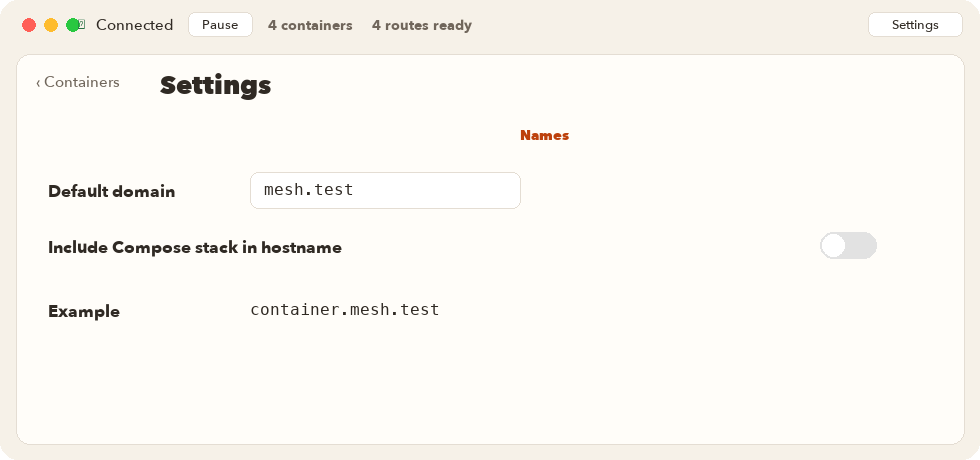

Names

Names are DNS names for containers on this Mac. The default domain is mesh.test. Change it in Settings, under Names. Use a lowercase domain, such as mesh.test.
ContainerMesh turns a container or stack name into a DNS label: lowercase letters, numbers, and hyphens. Underscores become hyphens. Each container keeps its own label, including a Compose replica. A container that is not in a stack stays a single label.
Compose stack
Include Compose stack in hostname adds the stack between the container and the domain. Each stack also has its own In hostname switch. That switch follows the setting until you change the stack.
| Choice | Name |
|---|---|
| Default | shop-web-1.mesh.test |
| Stack included | shop-web-1.shop.mesh.test |
| Standalone container | db.mesh.test |
Publish, edit, or leave it off
Each container can enable or disable its name. A disabled name shows Not published.
The published row edits the first label. The rest of the name, including the domain, stays put. A label you changed is marked Custom. Revert restores the automatic label. Typing a dotted name is rejected, and the field keeps the name under the current domain.
The same kind of edit is available for a stack label when that stack is included in the hostname.
Changing the domain, the stack option, or a published label reconnects a running connection so the names follow the change.
What a name does not do
The name does not choose the application port, issue a certificate, or configure which host header the application accepts. Port 80 is http://shop-web-1.mesh.test/. A database on 5432 is db.mesh.test:5432. Publishing a port in Docker is not required for this connection.